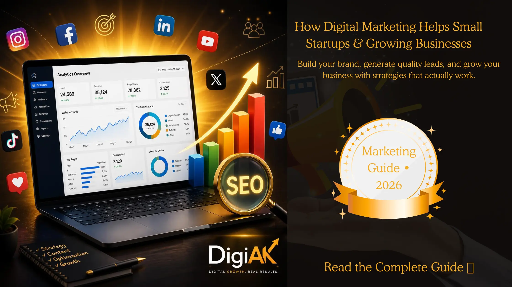

How Digital Marketing Helps Small Startups & Growing Businesses
Starting a business is exciting, but turning that business into a successful brand requires much more than just offering a good product or service. Every day, thousands of businesses compete for the attention of customers online. If your business isn't visible where your customers spend their time, you're already losing opportunities.
Digital Marketing has become one of the most powerful ways to build brand awareness, generate quality leads and increase sales without spending huge amounts on traditional advertising. Whether you're launching your first startup or trying to grow an existing business, a smart digital marketing strategy can help you achieve long-term success.
What is Digital Marketing?
Digital Marketing is the process of promoting products and services using online platforms such as Google, Facebook, Instagram, LinkedIn, YouTube and email marketing. Instead of relying only on newspapers, banners or television advertisements, businesses now connect with customers where they spend most of their time — online.
A successful digital marketing strategy usually includes:
- Search Engine Optimization (SEO)
- Social Media Marketing
- Google Ads
- Meta Ads
- Website Development
- Content Marketing
- Email Marketing
- Brand Strategy
When all these channels work together, businesses build trust, improve visibility and attract high-quality customers consistently.
Why Every Startup Needs Digital Marketing
Many startup owners believe they should first become successful before investing in marketing. In reality, marketing is what helps businesses become successful in the first place.
Increase Brand Awareness
Customers buy from brands they recognize. Digital marketing helps businesses stay visible through Google searches, social media posts, blogs and advertisements, making it easier for customers to remember your brand whenever they need your services.
Generate High Quality Leads
Unlike traditional marketing, digital marketing allows businesses to target the right audience based on location, age, interests, profession and online behaviour. This means your marketing budget reaches people who are actually interested in your services.
Build Customer Trust
Professional websites, informative blogs, customer reviews and active social media pages help businesses establish credibility. Trust plays a major role in converting visitors into paying customers.
Benefits of Hiring a Digital Marketing Agency
Managing marketing while running a business can quickly become overwhelming. From creating content to running advertisements and tracking performance, every activity requires time, planning and expertise. A professional digital marketing agency helps businesses focus on growth while experienced marketers handle their online presence.
Professional Marketing Strategy
Successful marketing is never based on guesswork. Every campaign should have a clear objective, target audience and measurable results. A professional agency studies your business, competitors and industry before creating a strategy that delivers long-term growth instead of temporary results.
Affordable Growth
Hiring an agency is often more cost-effective than employing multiple freelancers or building an in-house marketing team. You gain access to SEO experts, content creators, designers, social media managers and advertising specialists under one roof.
Measurable Results
One of the biggest advantages of digital marketing is transparency. Every campaign can be tracked using analytics tools, allowing businesses to monitor website traffic, leads, keyword rankings, conversions and return on investment.
Common Marketing Mistakes Startups Should Avoid
Ignoring SEO
Many businesses create a website but never optimize it for search engines. Without SEO, your ideal customers may never discover your business through Google.
Posting Without a Strategy
Random social media posts rarely generate consistent growth. Every post should support a clear business objective such as brand awareness, lead generation or customer engagement.
Inconsistent Branding
Using different colours, logos, messaging and designs across platforms creates confusion. Consistent branding builds trust and makes your business memorable.
Ignoring Website Experience
A slow, outdated or confusing website drives potential customers away. Your website should load quickly, work perfectly on mobile devices and clearly guide visitors towards contacting your business.
How DigiAK Helps Businesses Grow
At DigiAK, we believe every business deserves a customised marketing strategy rather than a one-size-fits-all solution. We work closely with startups, local businesses and growing brands to build their online presence and generate measurable results.
Our Digital Marketing Services include:
- Search Engine Optimization (SEO)
- Google Ads & Meta Ads
- Social Media Marketing
- Brand Identity & Strategy
- Website Development
- Content Marketing
- Email Marketing
- Performance Marketing
Final Thoughts
Digital marketing is no longer optional—it is one of the most important investments for any startup or growing business. With the right strategy, businesses can increase visibility, build customer trust, generate quality leads and achieve sustainable growth.
Instead of spending money on random marketing activities, focus on building a strong digital presence that delivers long-term value. A well-planned strategy today can create consistent business opportunities for years to come.
Frequently Asked Questions
Is digital marketing worth it for startups?
Yes. Digital marketing helps startups compete with larger brands by improving online visibility, generating leads and building trust without requiring a massive advertising budget.
How long does SEO take to show results?
SEO is a long-term strategy. Most businesses start seeing noticeable improvements within 3 to 6 months, depending on competition and website quality.
Why should I hire DigiAK?
DigiAK creates customised digital marketing strategies designed specifically for your business goals. We focus on measurable growth, transparent reporting and long-term success rather than short-term vanity metrics.
Ready to Grow Your Business?
Whether you're launching a startup or scaling an existing business, DigiAK can help you build a powerful online presence through SEO, social media marketing, paid advertising and branding.
Contact DigiAK Today